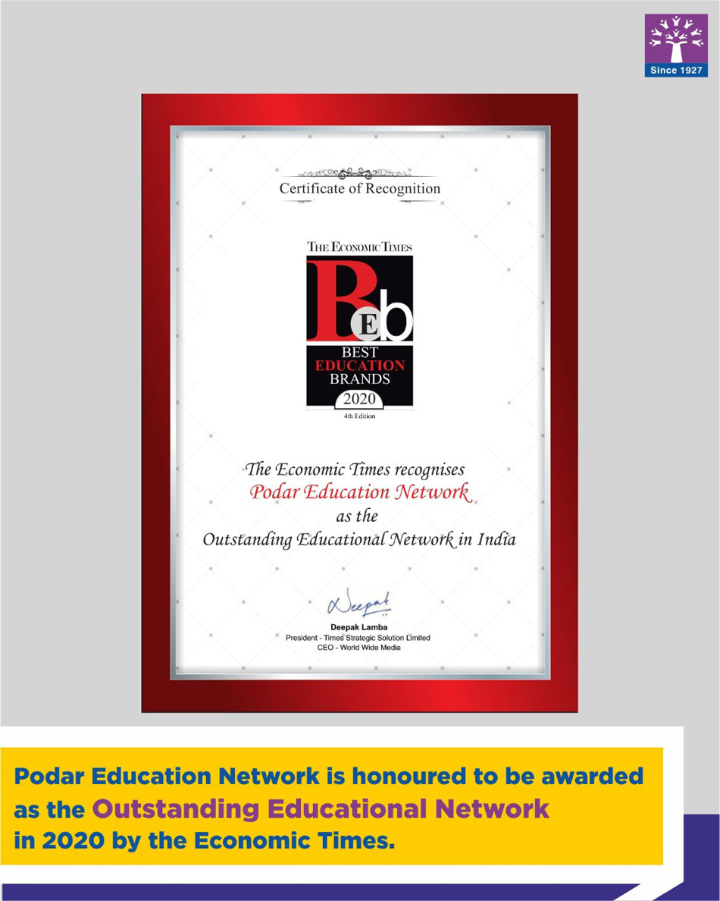

School Achievements

Podar Education Network to be awarded as the Outstanding Education Network 2020
Podar Education Network is honoured to be awarded as the Outstanding Education Network in 2020 by Economic Times.

Podar International Schools recognised among top 10 schools
Podar International School has been recognized amongst the Top 10 International Schools in Mumbai by the Hindustan Times Annual Mumbai School Survey 2019 and Times School Survey 2019.
_(cropped).jpg)